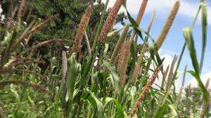
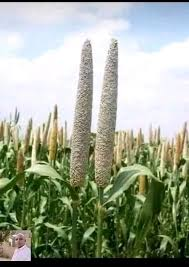
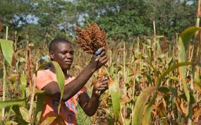

Mwongozo Kamili wa Kilimo Bora cha Uwele Kitaalamu

1. Idara ya Maandalizi ya Shamba na Udongo
Uwele ni zao lenye ustahimilivu mkubwa wa ukame na joto, na una uwezo wa kutoa mavuno hata kwenye maeneo yenye udongo usio na rutuba kabisa.
- Hali ya Udongo: Unastawi vizuri kwenye udongo mwepesi wa kichanga au tifutifu (loam to sandy soils). Uwele unavumilia tindikali kali ardhini lakini haustahimili kabisa udongo mzito wa mfinyanzi unaotuamisha maji.
- Kutayarisha Udongo: Kutokana na udogo mkubwa wa mbegu za uwele, shamba lazima lilimwe na kusawazishwa vizuri ili kuzuia mbegu kuzama ndani sana na kushindwa kuota vizuri.
2. Idara ya Upandaji na Vipimo vya Nafasi
Upandaji wa uwele kwa nafasi sahihi unasaidia kuzuia mmea usisongane na kuwezesha masuke marefu na mazito kutengenezwa [1.3].
| Nafasi Kati ya Mstari na Mstari | Nafasi Kati ya Shimo na Shimo | Kina cha Kupanda | Idadi ya Mbegu kwa Shimo |
|---|---|---|---|
| 60 Sentimita hadi 75 cm | 15 Sentimita hadi 20 cm | 2 Sentimita (2 cm) - Usizike sana! | Mbegu 3 hadi 5 (Kisha punguza zibaki 2 zikishakua) |

📋 Ripoti ya Mahitaji
💵 Makadirio ya Kifedha ya Uwele
3. Idara ya Lishe na Uwekezaji wa Mbolea
Uwele una uwezo mkubwa wa kutoa mazao hata bila mbolea nyingi, lakini matumizi ya mbolea ya kiwango kidogo huongeza unene wa suke kwa kiasi kikubwa [1.3].
Mbolea ya Kupandia (Fosfari)
Weka **kilo 50 za DAP kwa ekari moja** wakati wa kupanda ikiwa ardhi imechoka kabla ya kuweka mbegu ardhini [1.3].
Mbolea ya Kukuzia (Nitrojeni)
Nyunyizia **kilo 50 za UREA kwa ekari moja** wiki ya 3 hadi ya 4 baada ya kuota ili kusaidia urefu wa suke na kuongeza kiasi cha protini na madini ya chuma kwenye nafaka [1.3].
4. Idara ya Mbegu bora na Changamoto ya Lishe
Kituo cha utafiti wa kilimo cha **TARI Hombolo** kinahimiza matumizi ya mbegu zilizofanyiwa utafiti ili kuhakikisha uwezo mkubwa wa kukabili mabadiliko ya tabianchi:
- Okoa: Mbegu maarufu nchini inayovumilia sana ukame mkali, inakomaa haraka (siku 75-85), na ina kiwango kikubwa cha madini ya chuma (Iron) yanayosaidia watoto na kina mama wajawazito dhidi ya utapiamlo na anemia.
- Aina za Kienyeji zilizoboreshwa: Zina sifa ya kutoa vinyweleo virefu (bristles) kwenye masuke; vinyweleo hivi vinalinda nafaka isiliwe na ndege shambani.
5. Idara ya Ulinzi: Kudhibiti Magugu, Ndege na Wadudu
Adui mkubwa wa uwele hufanana sana na wale wa zao la mtama.
Kudhibiti Ndege na Kupunguzia (Thinning)
Palizi ya kwanza ifanyike wiki ya pili. Pia, ni muhimu kufanya **thinning** (kung'oa mimea iliyozidi shambani na kuacha mimea miwili tu yenye afya kwa kila shimo) ili isishindanie chakula. Makundi ya ndege ni changamoto kubwa, hivyo ulinzi huhitajika suke linapoanza kubeba nafaka.
Wadudu na Ukungu wa Ergot
Kiwavi wa Suke (Millet Head Miner): Mdudu anayekula punje changa za uwele ndani ya suke na kuacha suke likiwa tupu. Ugonjwa wa Koga (Ergot): Maambukizi ya fangasi yanayofanya suke kutoa majimaji ya sukari yanayovutia ukungu mweusi wenye sumu [1.3].
6. Idara ya Uvunaji na Uhifadhi
Vuna pale ambapo masuke yote yamekauka na punje zimekuwa ngumu na za kijivu au kahawia.
- Uvunaji: Vuna kwa kukata masuke kwa visu, kisha yaanike kwenye maturubai juani hadi yakauke vizuri (unyevu ushuke hadi chini ya **12%**).
- Uhifadhi: Pura na upepete vizuri kupata punje safi. Hifadhi kwenye mifuko ya hermetic (PICS au AgroZ) ili kuzuia wadudu wa ghalani (dumuzi) wasiharibu mazao yako bila kutumia dawa za kemikali [1.3].
